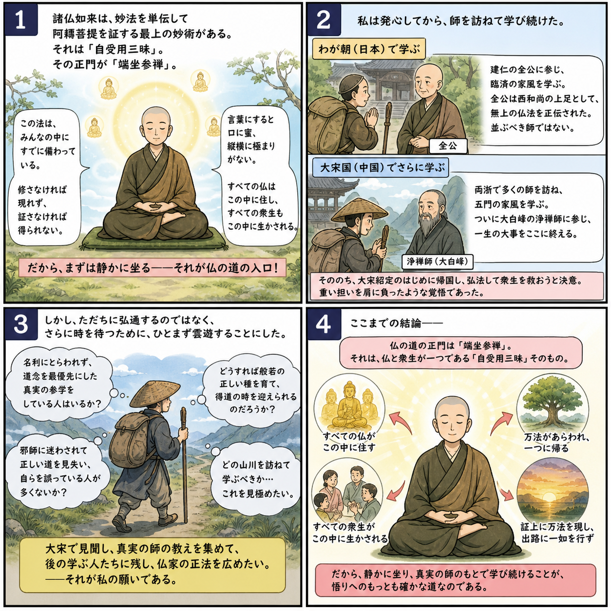

序分 巻一覧
辨道話
本ページは辨道話の紹介ページです。以下は原文の短い抜粋にとどめています。
坐禅辨道の大意と、道元自身の求法の経緯が述べられます。七十五巻に入る前に読むと全体の文脈が掴みやすい文章です。
原文・現代語訳の全文は 全文ページを参照してください。
原文（要点の抜粋）
諸佛如來、ともに妙法を單傳して、阿耨菩提を證するに、最上無爲の妙術あり。これただ、ほとけ佛にさづけてよこしまなることなきは、すなはち自受用三昧、その標準なり。
この三昧に遊化するに、端坐參禪を正門とせり。この法は、人人の分上にゆたかにそなはれりといへども、いまだ修せざるにはあらはれず、證せざるにはうることなし。
図解（4コマ・AI生成）
教義の根拠は原文・出典に従い、漫画は比喩の補助に留めてください。

読み方のヒント
- 「自受用三昧」「參禪」など、後の各巻で繰り返し定義される語が先に並びます。用語辞典へメモしながら読むとよいです。
- 大宋留学の記述は歴史的情報としても重要です。